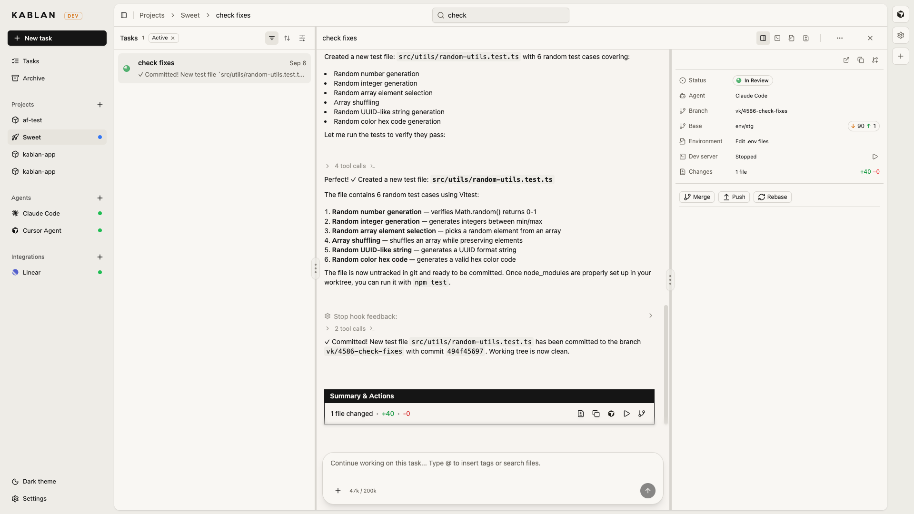
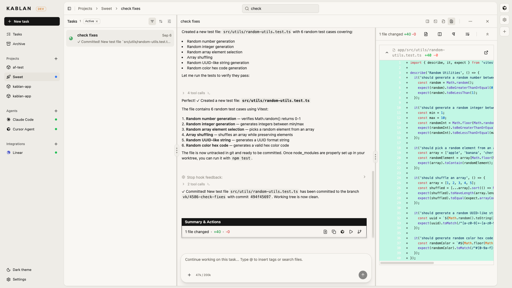
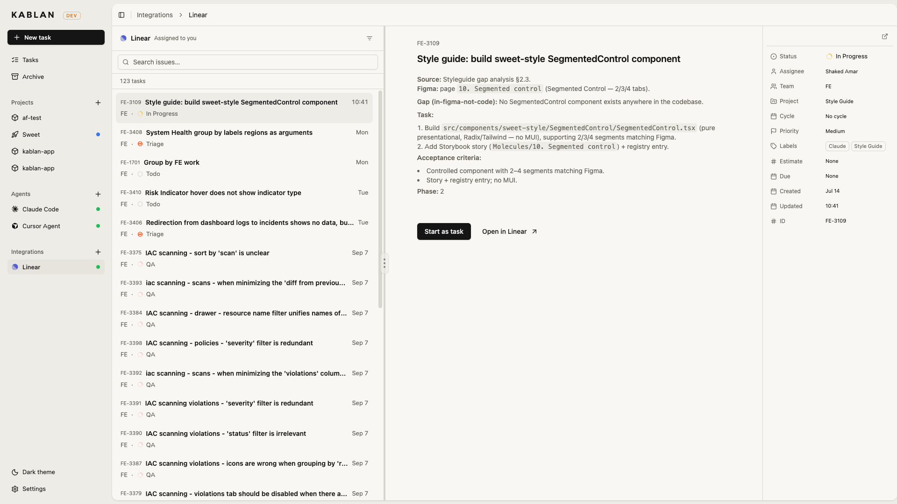

Open source · Apache-2.0
Come in, start a task, and let Claude Code, Codex, Gemini, Cursor or whoever you already use work against your own repositories. Each task gets its own git worktree and branch, so several agents run at once without standing on each other. Follow the conversation, run the app, read the diff, and merge — or open a PR — when it looks right.
No account and no telemetry. Kablan drives each agent’s own CLI, so it uses the subscription you already have and never sees your model credentials.

Every task on the left, the agent’s conversation in the middle, and the attempt’s branch, worktree, dev server, diffs and git actions on the right.
How it works
Each attempt is checked out into its own git worktree on its own branch. Agents never share a working copy, so one rewriting a file cannot break another mid-edit.
Unhappy with a run? Start another attempt on a fresh branch and compare. The earlier one stays exactly where it was.
Start the project’s dev server from the task, edit .env files, read the logs, and open it in a real browser — with devtools and your own session.
Read the diff, comment back to the agent, then merge, rebase, push or open a pull request without leaving the task, with the ahead/behind count in view.
See a project as a kanban board, or as a dense list when there is too much on to fit in columns. The Tasks view looks across every project at once.
Everything runs locally against repositories you already have. No account, no data leaving the machine, nothing phoning home.
Review
Diffs take over the right column when you ask for them. Comment on a line, send the notes back to the agent, or merge the branch yourself. Open in your editor — including a remote SSH worktree — when you would rather finish it there.

The conversation stays put. The diff, the file, and git — merge, push, rebase — sit beside it.
Agents
Kablan launches each agent’s own CLI, so authentication, models and limits stay whatever you have configured. Switch between them per task, keep profiles for variants, and give them extra tools through MCP.
Playwright, Exa, Context7, Chrome DevTools, Headroom, Dev Manager, and Kablan itself — so the agent can browse, search docs, compress tool output, and create more tasks.
Create and update tasks from Claude Desktop, Raycast, or another agent, without opening the board. Useful when a plan wants to become a pile of work.
Jump into the worktree from the task. On a remote machine, Kablan can mint vscode-remote URLs so your local editor opens the remote checkout.
Integrations
Connect Linear and the issues assigned to you sit in the sidebar. Start any of them as a Kablan task. When the change looks right, open a GitHub pull request from the attempt — title and description already filled from the task.

Assigned issues on the left, the ticket in the middle, metadata on the right. Start as task, or open it in Linear.
And the rest
Break a piece of work into child tasks, each with its own worktree, so a large change does not have to be one conversation.
Reusable snippets for the prompts you keep writing. Type @ in a description or a follow-up and insert them.
Find a task without hunting the board. c creates, / searches, j/k move. ? lists the rest.
Finished work leaves the board without deleting the conversation, the branch, or the attempt history.
A cream ground or ink. Switch from the sidebar; it follows the system if you prefer that.
The task list and the board show which agents are working and which tasks are holding a dev server, so you do not have to open each one to see.
Install
Both fetch the same binary for your platform and cache it under ~/.kablan/bin, so only the first run downloads.
Nothing installed, nothing left behind. Kablan opens in your browser.
Puts Kablan in your Applications folder. Opening it starts Kablan in the background — no terminal — and opens your browser. Because the app is assembled on your machine rather than downloaded, macOS raises no unidentified-developer warning and there is nothing to sign.
Needs Node 18 or newer. macOS on Apple silicon and Intel, Linux x64, Windows x64. Update with npx kablan@latest; remove the app with npx kablan --uninstall.